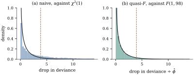

38.4 Overdispersion
The word has been used loosely so far. This section says where the extra variability comes from, how to see it, what ignoring it costs, and which repair to make.
38.4.1. Where it comes from
(a) Unobserved heterogeneity. Let
(b) Clustering. If the response is an average of
(c) Contagion. Let
with equality throughout if and only if
(d) Neither of the above. A wrong mean model, an omitted interaction or a few gross outliers all inflate
(e) The price. Suppose the mean model is correct and the true variances are
increasing in
Proof.
(a) The law of total variance gives
(b) is Lemma 38.1.1.
(c) Conditioning on
(d) The binary claim is the warning of Section 38.1; the rest records what
(e) By Theorem 38.3.1(a) with
These sizes are worse than intuition suggests. At
import numpy as np
from scipy import stats
def naive_size(phi, q):
"""Size of a nominal 5% chi-squared test when the statistic is inflated by phi."""
return stats.chi2.sf(stats.chi2.ppf(0.95, q) / phi, q)
print("phi q = 1 q = 3 q = 6")
for phi in (1.5, 2.0, 3.0, 5.0, 10.0):
print(f"{phi:4.1f} " + " ".join(f"{naive_size(phi, q):7.3f}" for q in (1, 3, 6)))Counts were simulated with a constant mean

def poisson_fit(X, y, steps=20):
beta = np.zeros(X.shape[1])
beta[0] = np.log(max(y.mean(), 0.5))
for _ in range(steps):
mu = np.exp(X @ beta)
z = X @ beta + (y - mu) / mu
beta = np.linalg.solve((X.T * mu) @ X, (X.T * mu) @ z)
return beta, np.exp(X @ beta)
def poisson_deviance(y, mu):
return 2 * np.sum(np.where(y > 0, y * np.log(np.maximum(y, 1e-300) / mu), 0.0) - (y - mu))
def null_statistics(n, phi, mu0, reps, rng):
"""Three statistics for the slope, on data whose true slope is zero."""
x = np.linspace(-1.0, 1.0, n)
X = np.column_stack([np.ones(n), x])
shape = np.full(n, mu0 / (phi - 1.0)) # negative binomial with variance phi*mu
out = np.empty((reps, 3))
for r in range(reps):
y = rng.negative_binomial(shape, shape / (shape + mu0)).astype(float)
beta, mu = poisson_fit(X, y)
beta0, mu_null = poisson_fit(X[:, :1], y)
drop = poisson_deviance(y, mu_null) - poisson_deviance(y, mu)
phi_hat = np.sum((y - mu) ** 2 / mu) / (n - 2)
bread = np.linalg.inv((X.T * mu) @ X)
sand = bread @ ((X * ((y - mu) ** 2)[:, None]).T @ X) @ bread
out[r] = [drop, drop / phi_hat, beta[1] ** 2 / sand[1, 1]]
return out
N, PHI, MU0 = 100, 4.0, 6.0
rng = np.random.default_rng(3841)
stat = null_statistics(N, PHI, MU0, 400, rng)
rates = [np.mean(stat[:, 0] > stats.chi2.ppf(0.95, 1)),
np.mean(stat[:, 1] > stats.f.ppf(0.95, 1, N - 2)),
np.mean(stat[:, 2] > stats.chi2.ppf(0.95, 1))]
print(f"rejection rates at the 5% level: naive {rates[0]:.3f},"
f" quasi-F {rates[1]:.3f}, sandwich Wald {rates[2]:.3f}")38.4.2. Seeing it
Four diagnostics, in the order in which they should
be used. Check the mean model first: an
omitted term can remove an apparent dispersion entirely,
as Example (Twenty thousand records in thirty-two rows)
showed, and only a mean model that has survived Definition 34.5.2
and the plots of Chapter
20 makes a dispersion parameter mean what it says.
Compare
38.4.3. Choosing a repair
Four devices are in use, differing in what they assume and what they give.
| device | assumes | gives | does not give |
|---|---|---|---|
| quasi model with |
mean and variance shape | likelihood, AIC, predictions | |
| quasi model with the sandwich | mean model only | efficiency, small samples | |
| NB2, NB1 or beta-binomial | a full distribution | likelihood, AIC, predictions | robustness to that choice |
| random effect | a full distribution and a mixing law | conditional coefficients, prediction of units | the marginal coefficients |
Putting a dispersion parameter into a quasi model
changes the standard errors and leaves
Continuing Example (Strike durations) and Example (Four standard errors for the strike data), the production coefficient under four treatments of the extra variability is
| fit | coefficient | standard error |
|---|---|---|
| Poisson, |
||
| quasi-Poisson, |
||
| NB1, |
||
| NB2, |
The NB1 fit has
The tests agree on the conclusion and not on its
strength. The drop in deviance is
import numpy as np
import statsmodels.api as sm
from scipy import stats
data = sm.datasets.strikes.load_pandas().data
y = data["duration"].to_numpy(float) # length of the strike, in days
x = data["iprod"].to_numpy(float) # unanticipated industrial production
X = np.column_stack([np.ones(len(y)), x])
n, p = X.shape
def quasi_irls(X, y, V, steps=60):
"""Solve the quasi-score equations for a log link and variance function V."""
beta = np.zeros(X.shape[1])
beta[0] = np.log(y.mean())
for _ in range(steps):
eta = X @ beta
mu = np.exp(eta)
W = mu ** 2 / V(mu) # working weight (dmu/deta)^2 / V(mu)
z = eta + (y - mu) / mu # working response
beta = np.linalg.solve((X.T * W) @ X, (X.T * W) @ z)
return beta
beta_lin = quasi_irls(X, y, lambda m: m) # V(mu) = mu
mu = np.exp(X @ beta_lin)
deviance = 2 * np.sum(y * np.log(y / mu) - (y - mu)) # quasi-deviance, V(mu) = mu
pearson = np.sum((y - mu) ** 2 / mu) # X^2 with V(mu) = mu
phi_pearson = pearson / (n - p)
beta_null = quasi_irls(X[:, :1], y, lambda m: m)
mu_null = np.exp(X[:, :1] @ beta_null)
deviance_null = 2 * np.sum(y * np.log(y / mu_null) - (y - mu_null))
naive_chisq = deviance_null - deviance # the Poisson likelihood ratio
quasi_f = (deviance_null - deviance) / phi_pearson # referred to F(1, n - p)
print(f"naive chi-squared {naive_chisq:.1f}, p = {stats.chi2.sf(naive_chisq, 1):.2e}")
print(f"quasi F {quasi_f:.2f} on (1, {n - p}) df, p = {stats.f.sf(quasi_f, 1, n - p):.4f}")Idea. The quasi-score does not know about the variance at all (Theorem 38.2.2(b)), so a wrong variance costs efficiency and calibration but not consistency. Whenever a colleague reports that “adding a dispersion parameter did not change the results”, the coefficients were being looked at and the standard errors were not.
38.4.4. Exercises
A. Check your understanding
Show that for fixed
Solution. By the law of large
numbers
A Poisson regression of accident counts on three
covariates gives
B. Practice
In Proposition 38.4.1(c),
let
Grouped binomial data have group sizes
Solution. Under
Both the NB1 model and the quasi-Poisson
specification have
Solution. In the quasi-Poisson
equation the log link cancels
C. Going deeper
Proposition 38.4.1(a)
says that unmodelled heterogeneity overdisperses. It
says nothing about the shape of the excess, and
the shape decides the repair. Suppose that, given an
unrecorded
(a) Using Theorem 3.2.1, show that
(b) Show that
(c) Which of the four devices in the table of this section is the right one, and what does the plot of squared Pearson residuals against
(d) Show that
Solution.
(a) By Theorem 3.2.1,
(b) By the proposition with the Poisson kernel,
(c) The variance is
(d) The quasi-score with a log link and
Proposition 38.4.1(b)
attributes the inflation
(a) Show that
(b) Deduce that a cluster-level contrast,
(c) Deduce that a within-cluster contrast,
(d) Show that the Pearson dispersion
Solution.
(a) Clusters are independent, so
(b) With
(c) The second term vanishes for every
(d) The Pearson statistic uses only the marginal variances, which are correct by assumption: